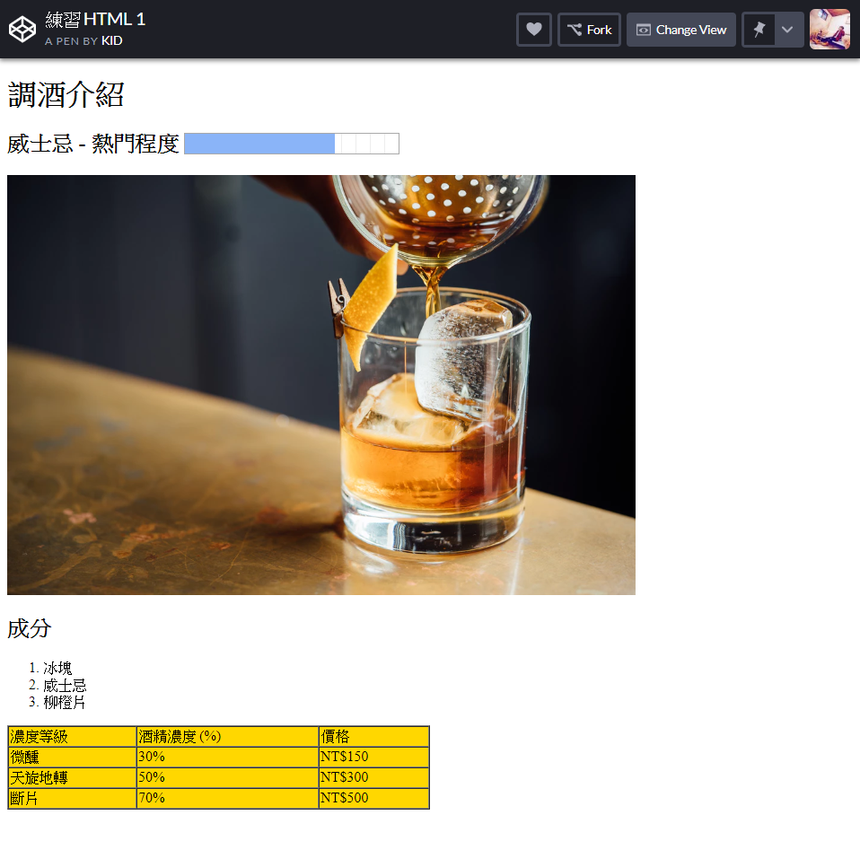

網頁設計 作業 - HTML 入門
1. 參考圖片

2. 練習步驟：
請在 Codepen 開啟一個新的 Pen
參考圖片加入對應的元素
3. 關鍵字：
圖片：img
進度條：progress
清單： order list
表格：table
※ 參考 W3School 文件 傳送門
4. 練習重點：
元素的構成，標籤、屬性與內容的設定。
5. 圖片素材：
Unsplash 找一張圖片按右鍵選取【複製圖片位置】